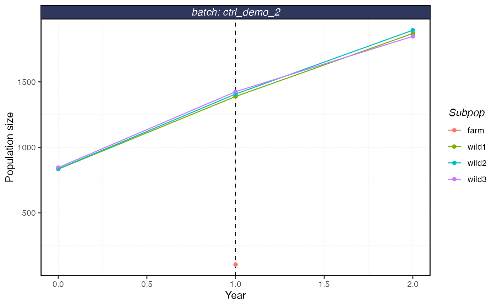

library(shellfishrisks)
load_shellfish()
#> shellfishrisks is using Conda environment r-reticulate
batch <- "ctrl_demo"First, we’ll generate a control file with the default settings. This copies a .csv file named in this case “ctrl_file.csv” to your working directory. You could then open that file up and modify as you see fit.
ctrl_file_path <- generate_ctrl_file("ctrl_file")We’ll then run the shellfishrisk model using the settings in that control file. This will store the results in a folder called “results/{batch}”. A copy of the control file used to create that run will be stored in “results/{batch}” as well.
run_shellfishrisk_ctrlfile(batch = batch, reps = 1, ctrl_file_path = ctrl_file_path)And from there we can load and plot our results same as always.
results <- serve_shellfish(batches = batch) # read the results stored in .txt files into a list object
results$survival
#> # A tibble: 11 × 4
#> # Groups: batch [1]
#> batch age survival survivorship
#> <chr> <dbl> <dbl> <dbl>
#> 1 ctrl_demo 0 0.529 1
#> 2 ctrl_demo 1 0.410 0.529
#> 3 ctrl_demo 2 0.0480 0.217
#> 4 ctrl_demo 3 0.807 0.0104
#> 5 ctrl_demo 4 0.677 0.00840
#> 6 ctrl_demo 5 0.611 0.00568
#> 7 ctrl_demo 6 0.692 0.00347
#> 8 ctrl_demo 7 0.633 0.00240
#> 9 ctrl_demo 8 0.575 0.00152
#> 10 ctrl_demo 9 0.278 0.000875
#> 11 ctrl_demo 10 0 0.000243
plot_shellfish(results, type = "rvars")
plot_shellfish(results, type = "fst")
plot_shellfish(results, type = "popsize")